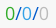
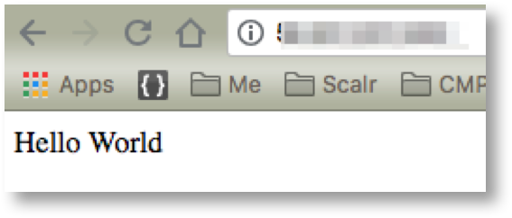

Building a Simple Farm¶
Keen to get started?
Just want to build a Farm and learn the details later?
This page does exactly that. No frills rapid farm building to create a simple web site.
Prerequisites
- You have a login to Scalr and access to the Farm menu, in Environment Scope
- You can see a list of base roles as shown below, or there is an Ubuntu base role of some sort available. (If you cant see these roles ask your Admin to run scalr-server-manage sync_shared_roles)
Overview¶
We will be doing the following using and Ubuntu Role. Don’t worry if Linux or Ubuntu isn’t your thing, you wont even need to login to linux to get this working.
- Create a Farm
- Add a Farm Role
- Configure it to install Apache on boot up
- Configure web page on boot up
- Launch and test
Fast Farm Build¶
- Login to Scalr and navigate to a suitable Environment scope via the Environment menu.
{kind=link}
- On the Dashboard enter a Farm name and Project in the “CREATE NEW FARM” widget and click “CREATE NEW FARM”
{kind=link}
- Click on “ADD FARM ROLE”, the click on “Base”. Select a small Instance Type and adjust the network settings as required. Your Admin can advise you on which network to use. When ready click on “ADD TO FARM”.
Now Click on the arrow next and then click “SAVE FARM”. The farm will be saved and you will be shown a list of Farms. We will comeback to the Farm in a moment.
{kind=link}
We now need to create scripts to configure the servers in the Farm.
Script 1 - Install Apache
- Click on the Main Menu and then on Scripts -> ADD NEW
- Create a script as shown in the screen shot below. The code is below that for easy copy/paste. Be sure to set the timeout to 1800.

#!/bin/bash
apt-get install -y apache2; service apache2 start
- Now create a second script to create the web site. Call this one “Install Web” and set the timeout to 1800. The code for the script is as follows.
#!/bin/bash
echo "$CUSTOM_MESSAGE" > /var/www/html/index.html
We now need to add the Orchestration to the Farm Role and set up the CUSTOM_MESSAGE variable for the script.
- Click on Farms, find your farm in the list and click on . The Farm Role will shown in the left hand side panel. Click on it.
- Click on “ORCHESTRATION”, then “NEW RULE” and select the TRIGGER EVENT = “BeforeHostUp”, Set the Scalr Script to “Apache Install”.
- Now click on “NEW RULE” again and add a rule for the with the “Install Web” script for the same event (BeforeHostUp).
8. Now click on “GLOBAL VARIABLES” and create a new variable called CUSTOM_MESSAGE with the value “Hello World”. .. image:: images/gv.png
- Finally we need to make sure you can access the web site via port 80. Click on Security -> ADD SECURITY GROUPS -> NEW SECURITY GROUPS and create a new group with a rule that allows TCP Port 80. Be sure to Add the group. Now SAVE the farm.

Ok, lets launch…!
- In the farm list click the launch and confirm by clicking “LAUNCH”. Then click on the Server link  in the farm list to watch your server launch.
After a while the Server will transition through “Initializing” to “Running”. When it is running grab the Public IP and browse to it in your browser of choice. You should see this.
What Next?
- Go and edit the value of the Global Variable and stop and relaunch the Farm.
- Move on to read more about Scalr infrastructure management, staring with Images and Roles in Scalr.